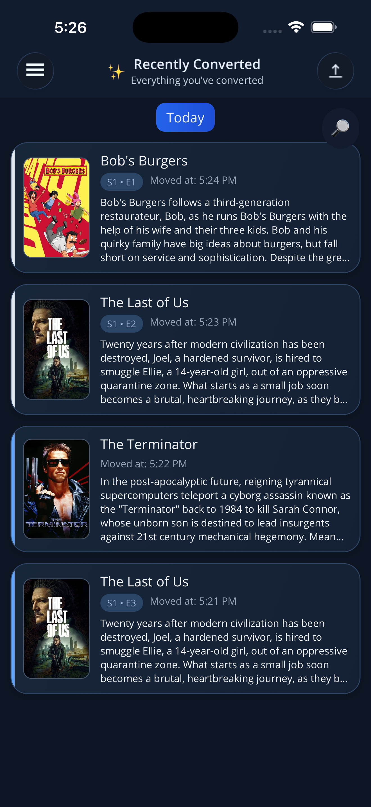
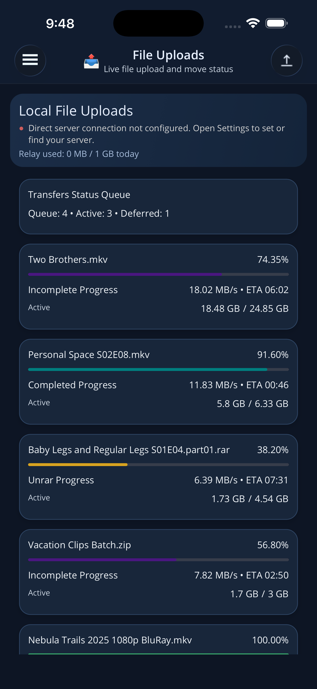
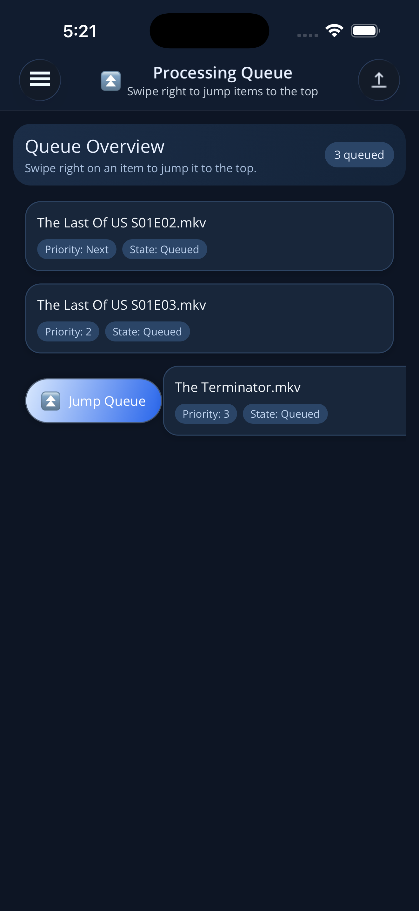
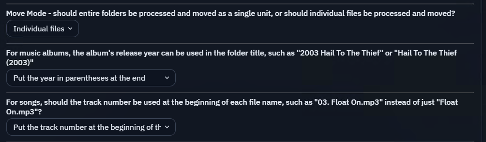

YOUR HOME MEDIA, CONNECTED
A little closer
to your library.
From your phone to your home media server. Transfer files, follow their progress, and keep your library organized with Klypp.
For your own media. On your own server.

iOS / Android BETA
Linux / macOS / Windows
Self-hosted server
A SIMPLE CONNECTION
At home. Away.
All connected.
Klypp connects the phone you carry to the media server you run. Here’s where it starts.
-
01
Give your library a home.
Install KlyppServer on your computer or compatible self-hosted device. Choose where your media belongs.
Explore server setup -
02
Bring your phone along.
Get Klypp for iOS or Android and connect it to your server through the secure relay.
Get the mobile app -
03
Send it. Follow it.
Upload your files, see transfer progress, and manage the processing queue as your library grows.
Take a closer look


LESS GUESSWORK. MORE CONTROL.
Know what’s moving.
Choose what’s next.
Your media workflow shouldn’t be a mystery. Keep an eye on transfers and processing from your phone.
Follow your files home.
See file progress in Media Transfers, then check Snapshot for a quick view of your server.
Put the next file first.
Review your processing queue and use Jump queue when a file should be processed next.
A PLACE FOR EVERYTHING
Your library.
Your way of organizing.
Set destinations for movies, TV, and music. Keep kids’ media and 4K content separate when your setup calls for it.

SELF-HOSTED AT HEART
Home is where
your media lives.
Your server is the destination. Klypp’s relay connects your devices with authenticated, encrypted transport; relayed traffic is transient and isn’t stored.
Built for personal media you own or are licensed to use. We do not sell personal data.
Read about privacyMAKE THE CONNECTION
Your library is home.
Take the controls with you.
Start with the server. Connect your phone. Make it yours.
Get started with Klypp Need a hand? We’re here to help.